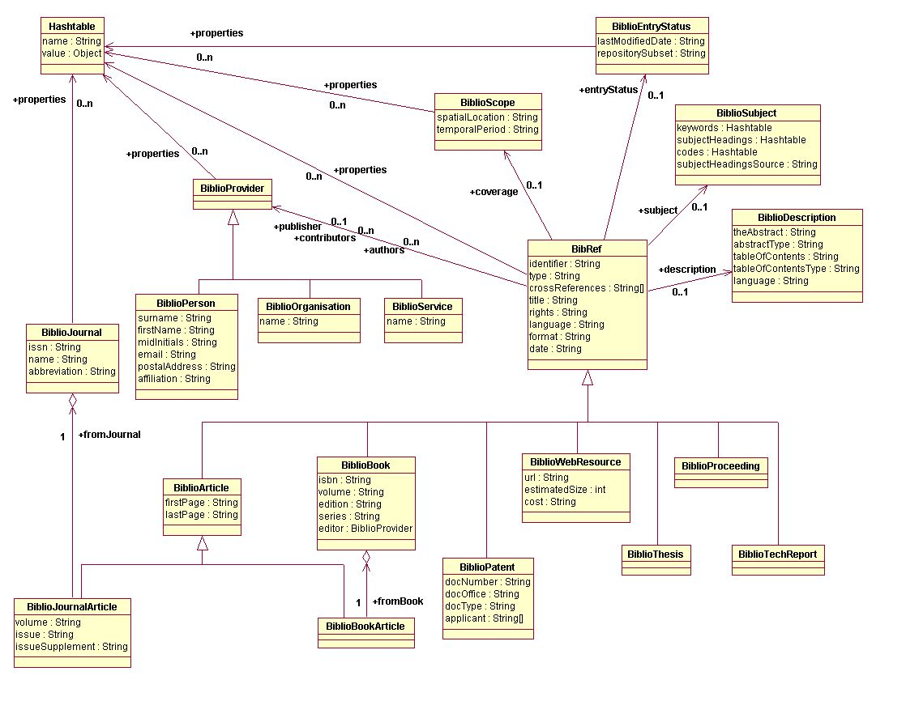

org.biojava.bibliography.BibRef
org.biojava.bibliography.BibRef
|
||||||||||
| PREV CLASS NEXT CLASS | FRAMES NO FRAMES | |||||||||
| SUMMARY: NESTED | FIELD | CONSTR | METHOD | DETAIL: FIELD | CONSTR | METHOD | |||||||||
java.lang.Object
public class BibRef
This class is a core class of the bibliographic data model - it represents a bibliographic reference, a citation. It is a super-class for all specialized citation types, but it can also be instantiated and represent an additional specialized citation type.
The BibRef class has several explicit attributes, which are reasonably general and which originate from the Dublin Core Metadata, and a hashtable that can hold any number of additional attributes. The same pattern is repeatedly used on several other places of the data model. It achieves extendibility without losing interoperability if the following rules are obeyed:
BibRefSupport for details).
The BibRef class is a parent class for derived classes representing bibliographic
references to specialized bibliographic resources. The following classes are
defined explicitly:
BiblioBook,
BiblioArticle,
BiblioBookArticle,
BiblioJournalArticle,
BiblioPatent,
BiblioThesis,
BiblioProceeding,
BiblioTechReport, and
BiblioWebResource
The active participants of the process of creation and dissemination of the
bibliographic resources are defined by the class BiblioProvider and its
sub-classes. The participants can be people, organizations, or even software
services (mainly used for new digital resources). The most obvious examples
are authors, but it includes also publishers and other contributors.
And finally, there is a class BiblioJournal describing journals.
The citations referring to the journal articles have a reference to this class.
This is an overview of all participating classes and their attributes: .
| Field Summary | |
|---|---|
BiblioProvider[] |
authors
The authors and contributors are responsible for creating the contents of the cited resource. |
BiblioProvider[] |
contributors
The authors and contributors are responsible for creating the contents of the cited resource. |
BiblioScope |
coverage
It defines an extent or scope of the content of the cited resource. |
java.lang.String[] |
crossReferences
It is an array of identifiers, all of them pointing to the same cited source but usually stored in different bibliographic repositories. |
java.lang.String |
date
Defines a date associated with an event in the life cycle of the cited resource when this resource became available. |
BiblioDescription |
description
An account of the content of the cited resource. |
BiblioEntryStatus |
entryStatus
It defines information related to the citation itself rather than to the cited resource. |
java.lang.String |
format
It describes the physical or digital manifestation of the cited resource. |
java.lang.String |
identifier
It is an unambiguous reference to this citation "within the world". |
java.lang.String |
language
It defines a language of the intellectual contents of the cited resource. |
java.util.Hashtable |
properties
Additional attributes of this citation. |
BiblioProvider |
publisher
A publisher is responsible for making the resource available. |
java.lang.String |
rights
It specifies information about rights over the cited resource. |
BiblioSubject |
subject
It defines the topic of the content of the cited resource. |
java.lang.String |
title
A title given to the cited resource (a name by which the resource is formally known). |
java.lang.String |
type
It defines the nature or genre of the cited resource. |
| Constructor Summary | |
|---|---|
BibRef()
|
|
| Method Summary |
|---|
| Methods inherited from class java.lang.Object |
|---|
clone, equals, finalize, getClass, hashCode, notify, notifyAll, toString, wait, wait, wait |
| Field Detail |
|---|
public java.util.Hashtable properties
public java.lang.String identifier
public java.lang.String type
It defines the nature or genre of the cited resource.
A recommended best practice is to use only values from a controlled vocabulary
named as defined in BibRefSupport.RESOURCE_TYPES.
Syntactically, and because of making query navigation easier, the value of this
attribute should be equal to a constant predefined in BibRefSupport,
such as BibRefSupport.TYPE_BOOK for books, or
BibRefSupport.TYPE_JOURNAL_ARTICLE for journal articles.
However, there may be bibliographic resources, which are
not defined by specialized sub-classes (for example, letters, practical guideline,
or archives), and therefore they do not have predefined names in
BibRefSupport interface.
Note that for the description of the physical or digital manifestation of the
cited resource there is an attribute format.
public java.lang.String[] crossReferences
It is an array of identifiers, all of them pointing to the same cited source but usually stored in different bibliographic repositories.
Note that this attribute is not for referencing citations to other documents that are related to the cited document.
public java.lang.String title
public BiblioSubject subject
public BiblioDescription description
public BiblioScope coverage
public BiblioProvider[] authors
The authors and contributors are responsible for creating the contents of the cited resource. There is no formal definition of how this responsibility is divided between them. However, the authors are usually primary creators while contributors may be illustrators, translators, or other creative providers.
The authors are in an ordered array (to be able to find the first author).
public BiblioProvider[] contributors
The authors and contributors are responsible for creating the contents of the cited resource. There is no formal definition of how this responsibility is divided between them. However, the authors are usually primary creators while contributors may be illustrators, translators, or other creative providers.
The contributors are in an ordered array (to be able to find the first contributor).
public BiblioProvider publisher
public java.lang.String rights
It specifies information about rights over the cited resource. Typically, it contains a rights management statement for the resource, or it refers to a service providing such information. Rights information often encompasses Intellectual Property Rights, Copyright, and various Property Rights.
If the attribute is empty, no assumptions can be made about the status of these and other rights with respect to the cited resource.
public java.lang.String date
Defines a date associated with an event in the life cycle of the cited resource when this resource became available. Usually, it is a date of publishing. However, for not yet published resources, it can be a date of creation.
The suggested encoding is as defined in a W3C NOTE Date and Time Formats. This NOTE defines a profile of ISO8601 standard. ISO8601 describes a large number of date/time formats and the NOTE reduces the scope and restricts the supported formats to a small number. The profile offers a number of options from which this attribute should contain/permit only the following ones:
Exactly the components shown here must be present, with exactly this punctuation. Note that the T appears literally in the string, to indicate the beginning of the time element, as specified in ISO 8601.
Times are expressed in UTC (Coordinated Universal Time), with a special UTC designator (Z), again as specified in ISO 8601.
For query purposes, the format with fewer details is considered as having all possible values in place of missing details. Thus, YYYY-MM would mean all dates and times in the given month.
public java.lang.String language
It defines a language of the intellectual contents of the cited resource. The recommendation is to use values as defined by RFC1766 which includes a two-letter Language Code (taken from the ISO639 standard), followed optionally by a two-letter Country Code (taken from the ISO3166 standard).
For example, en for English, fr for French, or en-uk for English used in the United Kingdom.
Another possibility is to use MARC List of Languages.
In any case, the name of the used controlled vocabulary should be equal to
BibRefSupport.LANGUAGES.
public java.lang.String format
BibRefSupport.ATTR_FORMAT. For example:
BibRefSupport.TYPE_BOOK/BibRefSupport.ATTR_FORMAT.
public BiblioEntryStatus entryStatus
| Constructor Detail |
|---|
public BibRef()
|
||||||||||
| PREV CLASS NEXT CLASS | FRAMES NO FRAMES | |||||||||
| SUMMARY: NESTED | FIELD | CONSTR | METHOD | DETAIL: FIELD | CONSTR | METHOD | |||||||||